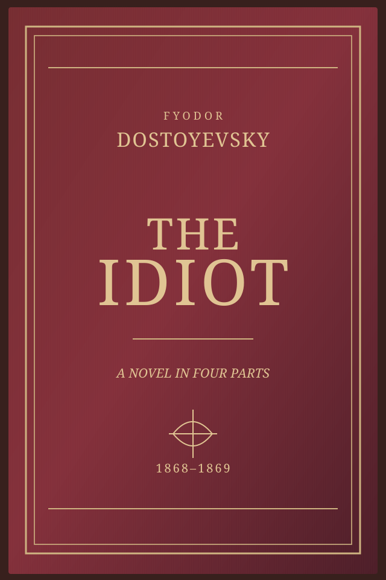

Complete novel · Four parts · Fifty chapters
The Idiot

Русский оригинал · Читать (только текст) ↗Original Russian · Read only · No narration · Opens Russian Wikisource
Unabridged text hosted in this library, divided into the original four parts. Narration uses your device’s voice. Your reading place is saved privately on this device.
Part I · Chapter I
Preparing the first chapter…